Enregistrer vos appels sur POCO M4 Pro
Guide pas-à-pas pour activer l'enregistrement automatique des appels sur MIUI / HyperOS via Shizuku et Koel — sans root et sans PC.
En France, enregistrer une conversation à l'insu de votre interlocuteur est illégal. Pour que l'enregistrement ait une valeur de preuve, je vous recommande d'obtenir l'accord explicite de la personne avant de commencer (par exemple : « Je vous préviens, j'enregistre notre conversation »).
Prérequis
Pour enregistrer les appels sans root sur MIUI / HyperOS, deux briques logicielles sont nécessaires :
- Shizuku : accorde aux applications les permissions du système Android sans avoir besoin de root.
- Koel : application open-source qui capture l'audio des appels en s'appuyant sur les permissions fournies par Shizuku.
Les deux outils sont gratuits. Shizuku est disponible sur le Play Store, Koel est distribué sur GitHub.
Télécharger les applications
Je commence par installer les deux outils indispensables. Shizuku fournit les autorisations système, Koel se charge de l'enregistrement.
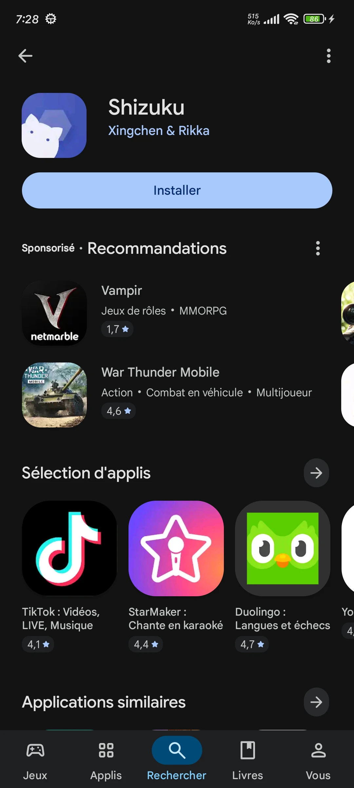
Activer les options pour les développeurs
Je vais dans Paramètres → À propos du téléphone et je tape 7 fois sur Version de l'OS pour débloquer le menu développeur.
- Activer Débogage USB.
- Activer Débogage USB (Paramètres de sécurité) et accepter l'avertissement rouge.
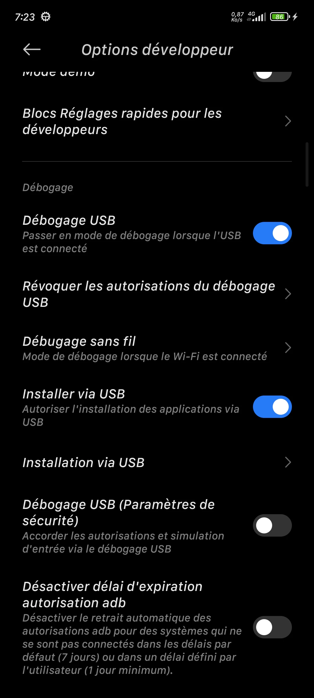
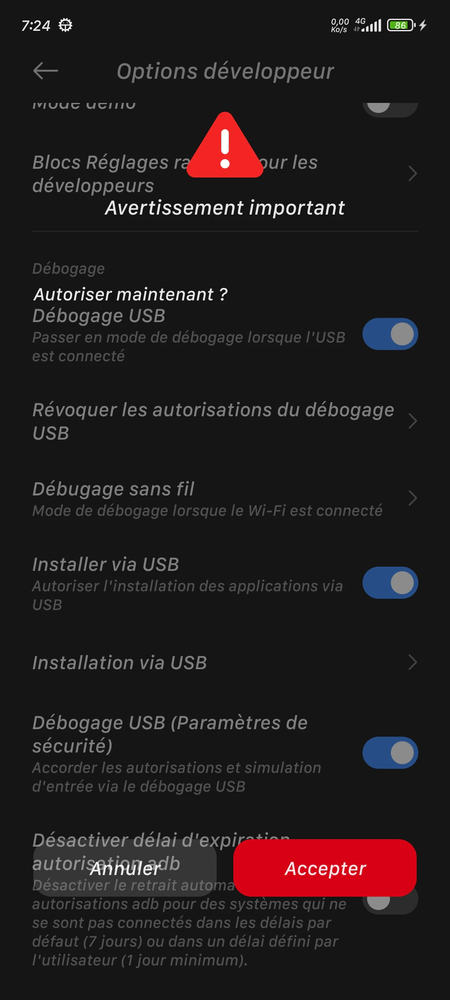
Coupler Shizuku (sans PC)
Je couple Shizuku en utilisant le débogage sans fil, ce qui évite d'avoir recours à un câble et à un ordinateur.
- Ouvrir Shizuku et appuyer sur Coupler (Pairing).
- Aller dans Options développeur → Débogage sans fil et l'activer. Accepter la demande de réseau.
- Appuyer sur Associer l'appareil avec le code d'association.
- Baisser la barre de notifications, appuyer sur la notification de Shizuku et saisir le code à 6 chiffres.
- Revenir dans Shizuku et appuyer sur Démarrer (Start).
Astuce POCO : si la notification de Shizuku n'apparaît pas, je change le style de notification dans les paramètres pour « Android ».
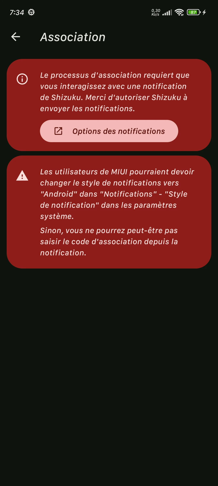
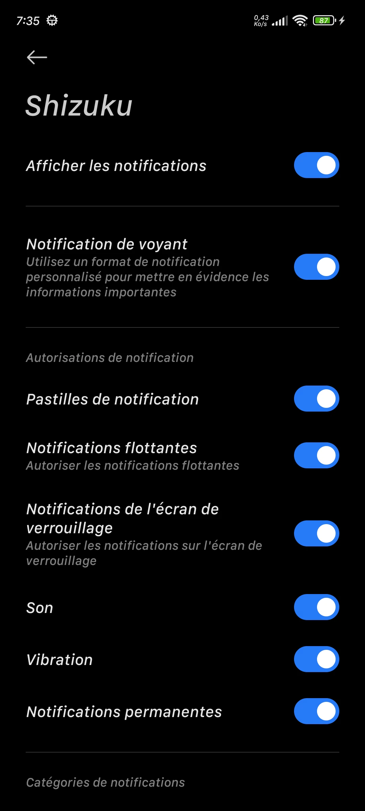
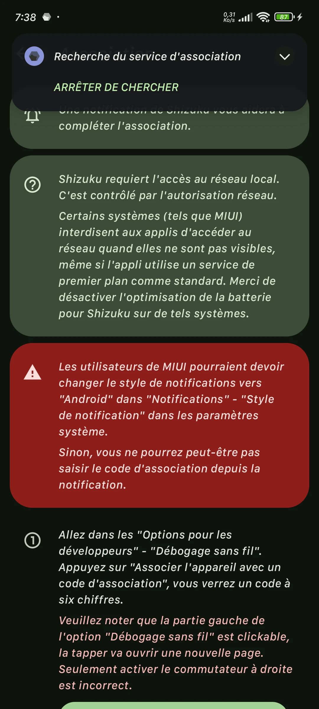
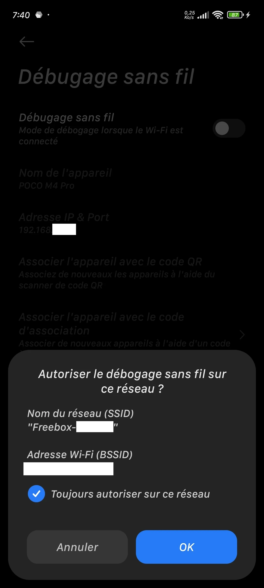
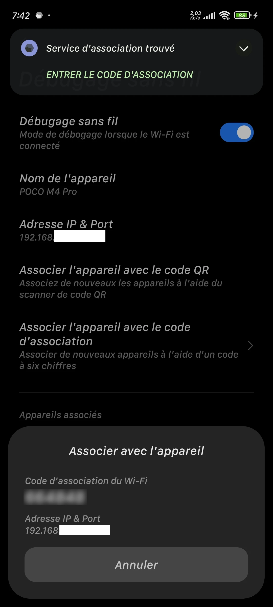
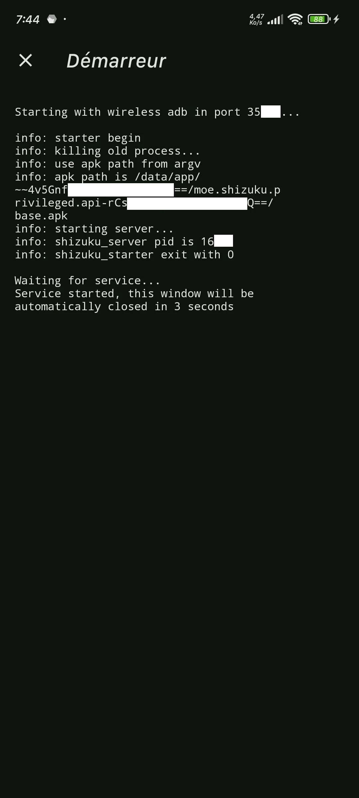
Configurer Koel
J'ouvre Koel. L'application demande l'accès aux journaux d'appels : je l'autorise.
Je clique sur Grant Shizuku Permission. Une fenêtre s'ouvre, j'autorise. Le statut doit passer à Shizuku : READY.
J'active Auto-record calls pour que chaque appel entrant et sortant soit enregistré automatiquement.
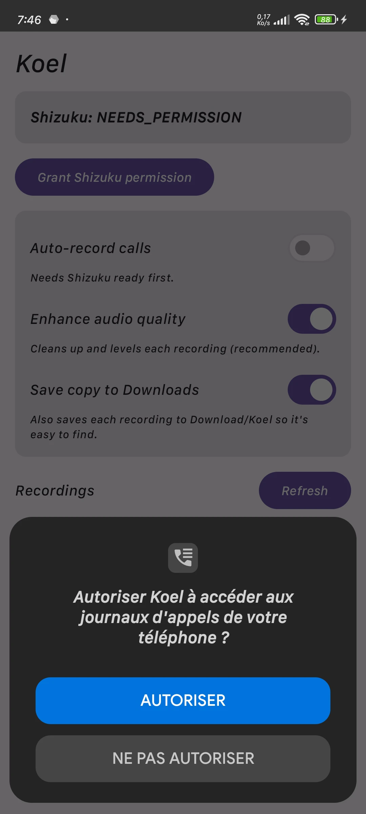
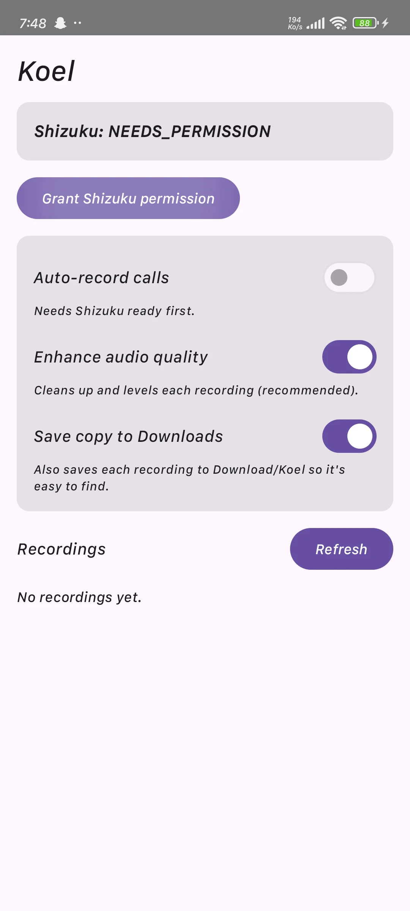
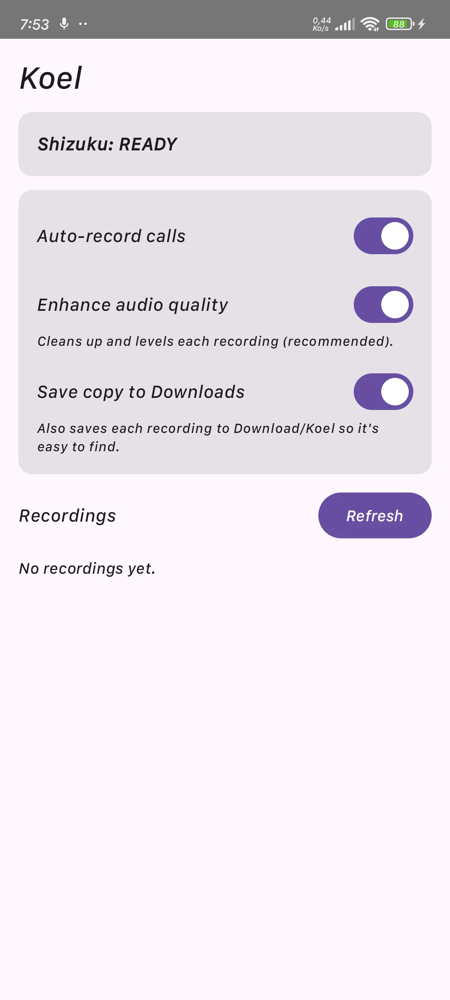
Éviter que le système bloque les applications
Sur MIUI / HyperOS, l'optimisation de la batterie met en veille les applications en arrière-plan. Je désactive cette optimisation pour Shizuku et Koel.
- Aller dans Économiseur de batterie et choisir Pas de restriction.
- Désactiver l'option Suspendre l'activité si inutilisée.
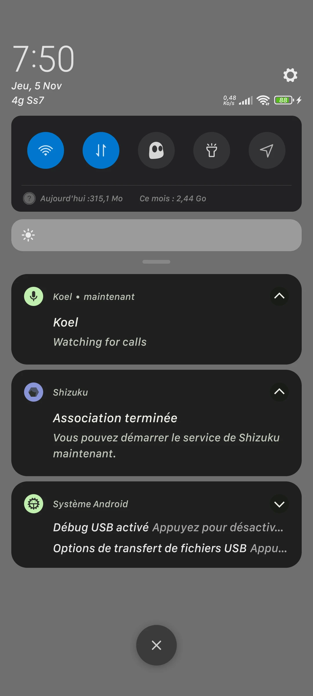
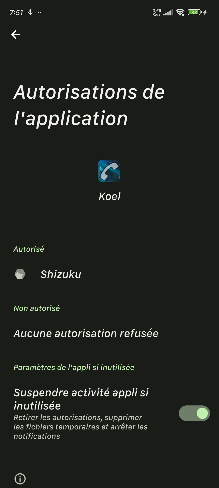
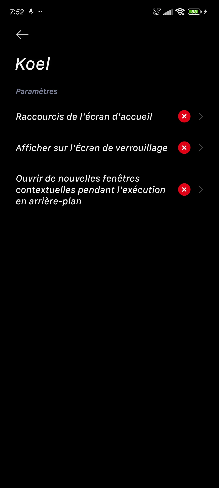
Désinstallation et nettoyage complet
Si je veux arrêter d'utiliser ce système et revenir à l'état d'origine du téléphone, je suis ces étapes dans l'ordre.
1. Arrêter et révoquer les accès
- Ouvrir Koel et désactiver Auto-record calls.
- Ouvrir Shizuku, aller dans Applications autorisées et révoquer l'accès de Koel.
- Dans Shizuku, appuyer sur Stop pour couper immédiatement le service.
2. Désinstaller les applications
Aller dans Paramètres → Applications → Gérer les applications. Chercher Koel et Shizuku, puis appuyer sur Désinstaller pour chacune.
3. Refermer les accès développeur
C'est l'étape la plus importante pour la sécurité du téléphone. Dans Paramètres → Paramètres supplémentaires → Options pour les développeurs, je désactive :
- Débogage sans fil
- Débogage USB
- Débogage USB (Paramètres de sécurité)
- Enfin, l'interrupteur principal Utiliser les options pour les développeurs. Le menu disparaît, c'est normal et sécurisé.
Nettoyage résiduel (optionnel) : Shizuku laisse parfois un fichier temporaire. Pour le supprimer et garantir qu'aucune trace ne reste (utile si une application bancaire refuse de s'ouvrir), je connecte le téléphone à un PC en débogage USB et je lance la commande suivante :
adb shell rm /data/local/tmp/shizuku_starter
Test final
J'appelle un proche, je parle quelques secondes, je raccroche. J'ouvre Koel : l'enregistrement doit apparaître dans la liste. Je n'oublie pas de prévenir mon interlocuteur !